Statistics
Note: There is no one-size-fits-all approach to statistical analysis. The statistical tests given within ProntoPCR are not exhaustive. It may be more appropriate to use another statistical program in conjunction with ProntoPCR.
The p-value significance is denoted as follows, with the default α = 0.05:
***p-values ≤ 0.001**p-values ≤ 0.01*p-values ≤ 0.05ns(not significant) for p-values > 0.05
Selecting the Data
Statistics can be performed on the 2^(- ΔCq), 2^(- ΔΔCq) or housekeeper gene mean values. It is not performed on the raw Cq or ΔCq/ ΔΔCq values, only the transformed (2^) data.
Select the data to be used for statistics:
- If 2^(- ΔCq) is selected, choose the gene and samples to perform statistics on:
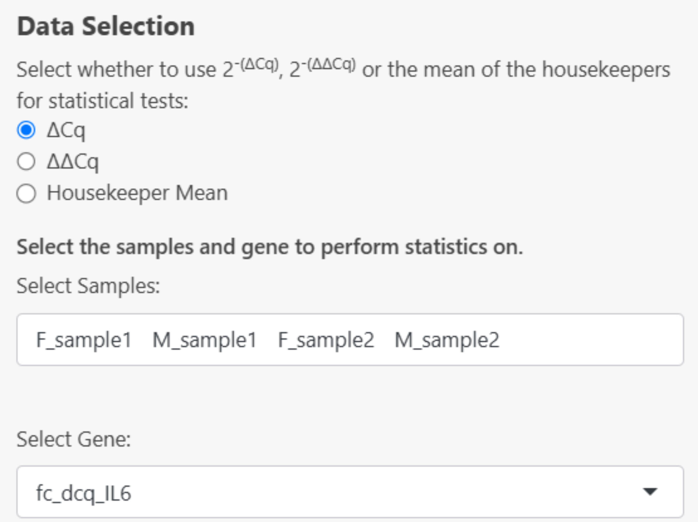
- If 2^(- ΔΔCq) is selected, the gene will automatically be inputted based on the selected options in the calculations > 2^(- ΔΔCq) tab. Select your samples in the dropdown menu. If you don’t see a sample in this section, it must be added to the dataset created in the Calculations > 2^(- ΔΔCq) tab:
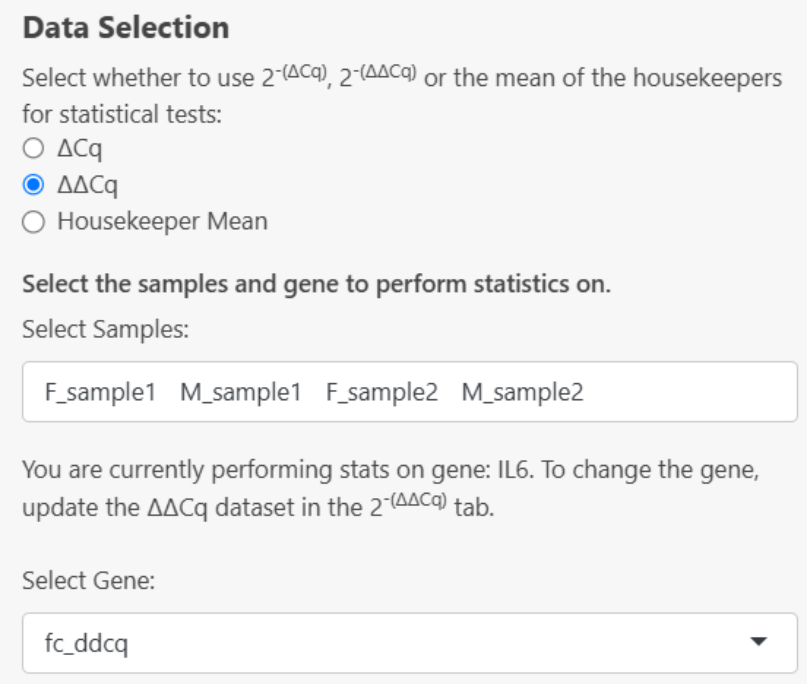
If the 2^(- ΔΔCq) dataset has not been created yet, this error message will be displayed:
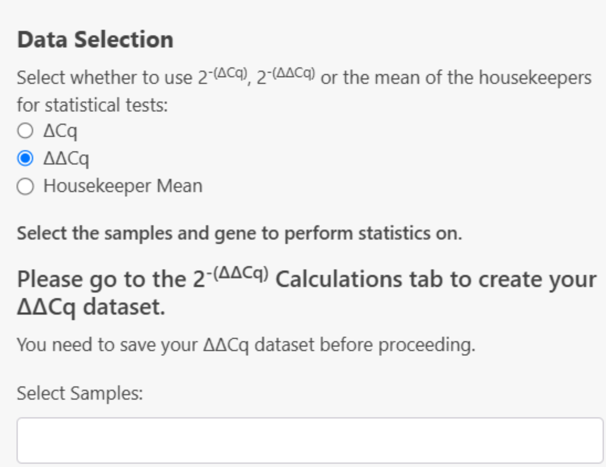
- If Housekeeper mean is selected, the mean_hk column will be used as the ‘Gene’ to perform statistics on:
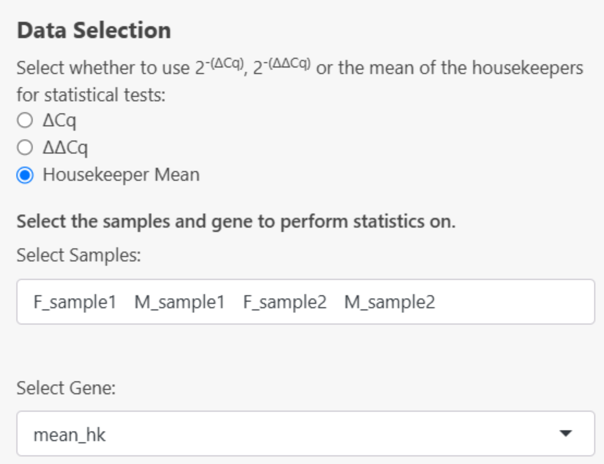
Descriptive Statistics
From this point onwards, all output given has been performed on the 2^(- ΔCq) dataset for the gene IL6 from the example data using the geometric mean for averaging the housekeepers.
Descriptive Statistics can be computed by selecting the checkboxes in the side panel. Descriptive statistics available include:
Sample Size
Calculated by counting the number of valid (non-missing) data points within each specified group for that gene.
Mean
The mean values are calculated for each specified group by averaging the valid (non-missing) data points using the arithmetic mean for that gene.
Geometric Mean
The geometric means are calculated for each specified group by taking the exponent of the average of the logarithms of the valid (non-missing) data points.
Median
The median values are calculated for each specified group by finding the middle value of the sorted valid (non-missing) data points within each group.
Standard Deviation
The standard deviations (SD) are calculated for each specified group by measuring the spread of the valid (non-missing) data points around the mean within each group.
Standard Error
The standard errors (SE) are calculated for each specified group by dividing the standard deviation (SD) of the valid (non-missing) data points by the square root of the number of valid observations in each group (i.e. Sample Size (n)). The standard errors (SE) are calculated as:
\[ SE = \frac{SD}{\sqrt{n}} \]
Where:
- SD is the standard deviation
- n is the sample size
95% Confidence Interval of the Mean
Confidence intervals (CI) are calculated for each group by first determining the standard error based on the standard deviation and sample size, then applying either the Z-score for large samples (n ≥ 30) or the t-score for smaller samples to compute the lower and upper bounds of the interval around the mean. These intervals provide a range where the true population mean is likely to fall with a specified level of confidence (95%).
For large samples (n ≥ 30):
\[ CI = \bar{X} \pm z \times \frac{SD}{\sqrt{n}} \] Where:
- \(\bar{X}\) is the sample mean
- SD is the standard deviation
- n is the sample size
- z is the Z-score corresponding to the confidence level (i.e. 1.96 for 95% confidence)
For smaller samples (n < 30):
\[ CI = \bar{X} \pm t \times \frac{SD}{\sqrt{n}} \]
Where:
- \(\bar{X}\) is the sample mean
- SD is the standard deviation
- n is the sample size
- t is the t-score corresponding to the desired confidence level and degrees of freedom (df=n-1).
In both cases, the confidence interval is expressed as:
\[ CI = [CI_{\text{Lower}},\ CI_{\text{Upper}}] = \left[\bar{X} - (z \text{ or } t) \times \frac{SD}{\sqrt{n}},\ \bar{X} + (z \text{ or } t) \times \frac{SD}{\sqrt{n}}\right] \]
Variance
The variances are calculated for each specified group by measuring the average of the squared differences between each valid (non-missing) data point and the group mean. This provides a measure of how spread out the data points are within each group.Variance is calculated as:
\[ S^2 = \frac{\sum (x_i - \bar{x})^2}{n - 1} \]
Where:
- \(S^2\) is the sample variance
- \(∑\) denotes the summation over all observations - \(x_i\) is each individual observation
- \(\bar{x}\) is the mean of the observations
- n is the number of observations
- n - 1 is the degrees of freedom
Minimum and Maximum
The minimum and maximum values are determined by identifying the smallest and largest valid data points for each group.
Example results:
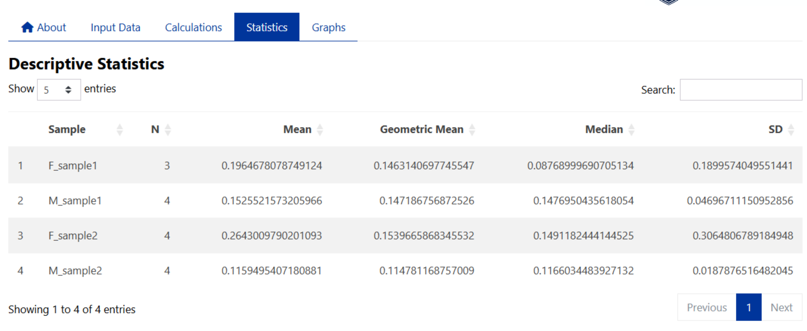
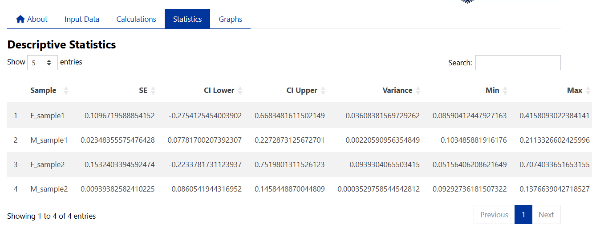
Normality Testing
The normality of data can be tested using a Shapiro-Wilk test, QQ plots and density plots in ProntoPCR. By default, the normality is tested per group on the raw data. If one-way ANOVA is selected, the normality tests will be performed on the residuals, not the raw data. A Residuals vs Fitted plot will also be displayed if One-way ANOVA and a normality test are both selected. The raw values are the default if no comparison of groups test, or any other group comparison tests are selected. Note that normality testing is usually considered to be unreliable for small sample sizes.
Shapiro-Wilk Test
A Shapiro-Wilk test can be performed by selecting the checkbox on the side panel.
Raw data:
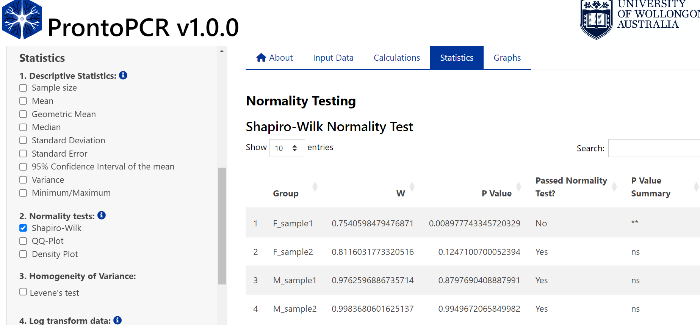
Residuals:
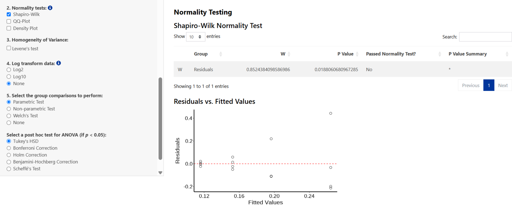
QQ Plot
A QQ Plot will be generated by selecting the checkbox on the side panel.
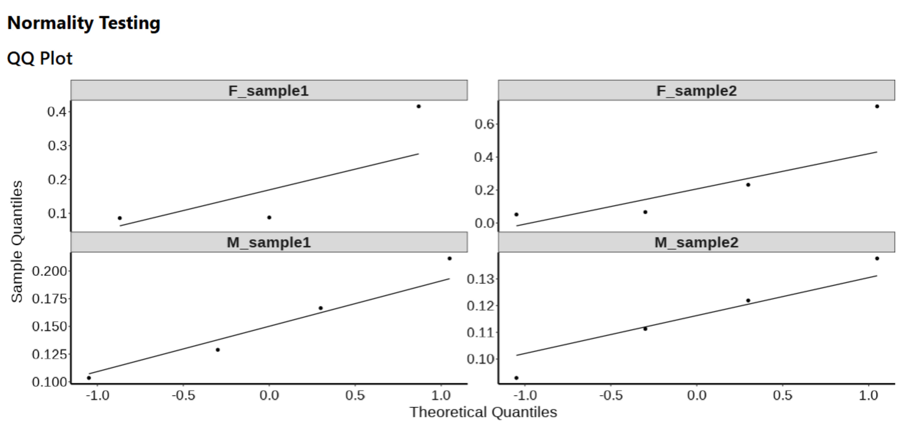
Density Plot
A density plot will be generated by selecting the ‘Density Plot’ checkbox on the side panel.
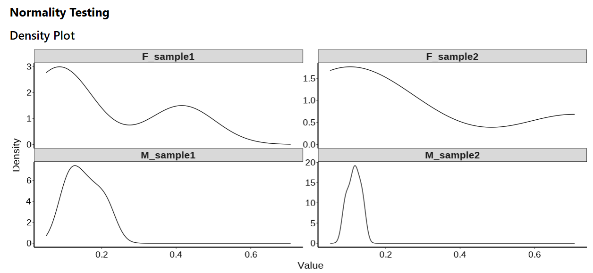
Homogeneity of Variance Testing
The homogeneity of variance can be tested using a Levene’s Test.
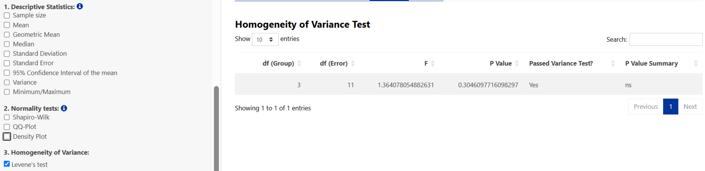
Log Transformation
If required, data can be log-transformed using log2() or log10(). For PCR data, it is recommended to use log2() transformations, however, log10() is given as an additional option if there are large differences in expression. If log2 or log10 is selected, all statistics will be performed on the transformed values e.g. log2(2^-ΔΔCq). Log transformation may help with normalizing data and reducing skewness. Note log transforming data points = 0 will return NA. To perform a log transformation, select Log2 or Log10 in the side panel. Any selected statistics will be performed on the log-transformed data when selected.
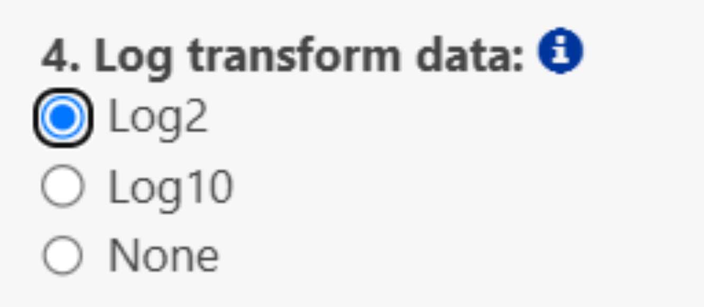
Group Comparison Tests
If two samples are selected:
- Independent t-test → Parametric Test
- Mann–Whitney U test → Non-parametric Test
- Welch t-test → Welch’s Test
If more than two samples are selected:
- One-way ANOVA → Parametric Test
Post-hoc tests:- Tukey’s HSD
- Pairwise t-test with Bonferroni adjustment for multiple comparisons
- Pairwise t-test with Holm adjustment for multiple comparisons
- Pairwise t-test with Benjamini–Hochberg adjustment for multiple comparisons
- Scheffé’s post-hoc
- Tukey’s HSD
- Kruskal–Wallis Test → Non-parametric Test
Post-hoc test:- Dunn’s test with:
- Bonferroni adjustment for multiple comparisons
- Šidák adjustment for multiple comparisons
- Holm adjustment for multiple comparisons
- Holm–Šidák adjustment for multiple comparisons
- Benjamini–Hochberg adjustment for multiple comparisons
- Hochberg’s Step-Up adjustment for multiple comparisons
- Bonferroni adjustment for multiple comparisons
- Dunn’s test with:
- Welch ANOVA → Welch’s Test
Post-hoc test:- Games–Howell post-hoc
Note: Post-hoc test results will be performed and displayed regardless of the group comparison p-value. This decision was made to ensure that all comparisons are available for review, as some users may wish to explore trends or patterns even in the absence of statistically significant differences. However, it is only appropriate to interpret the post-hoc results if the group comparison p-value is less than 0.05, as this threshold indicates a statistically significant difference between the groups.
To perform group comparisons, select an option from the side panel:
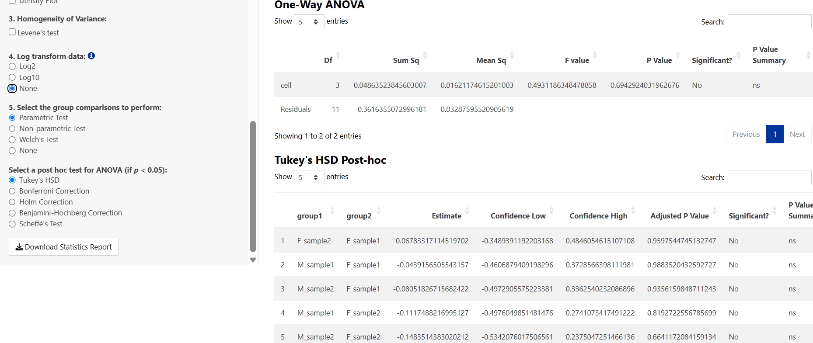
If a group comparison test is selected, a compact letter display results table will be provided. Samples sharing the same letter are not significantly different from one another, based on the selected post-hoc test results.
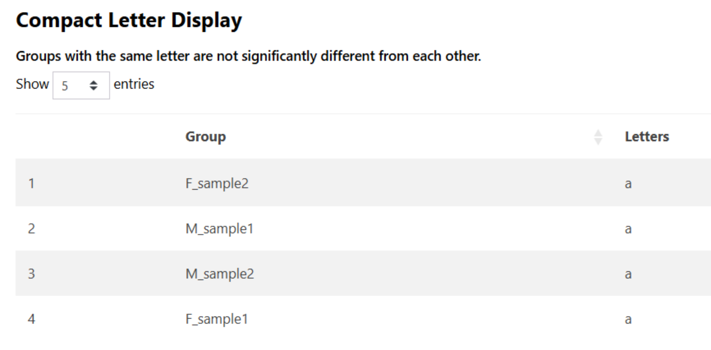
Saving Results
All results can be saved as an HTML file by selecting the Download Statistics Report Button on the side panel. This can be opened in any web browser for viewing.
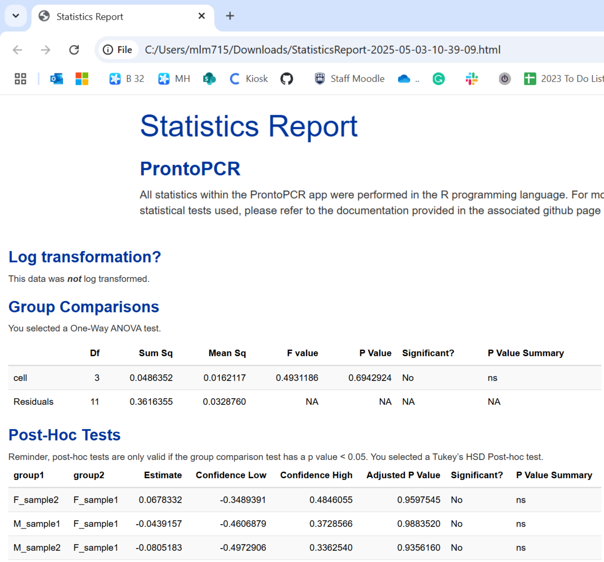